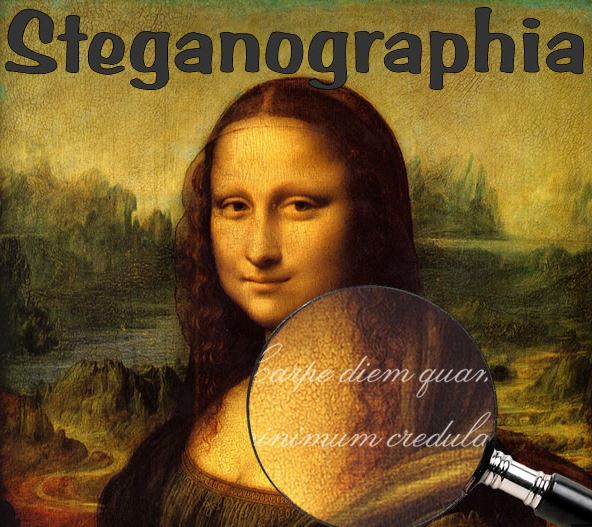
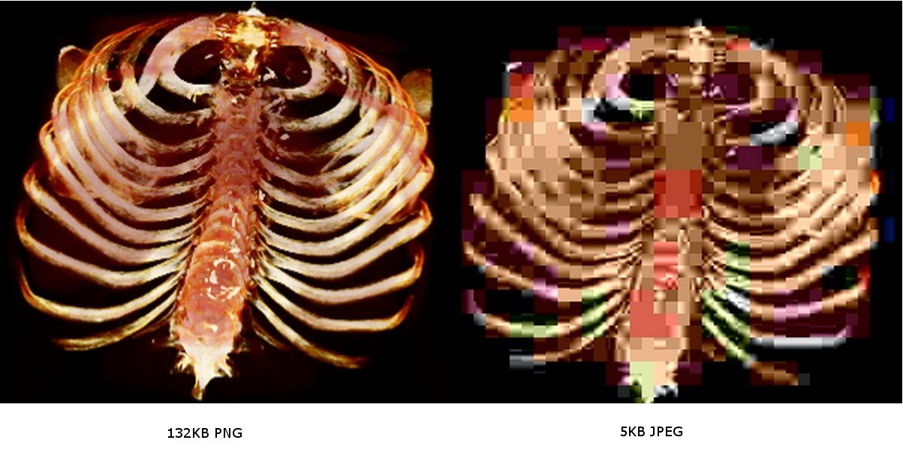
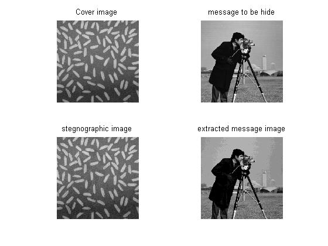
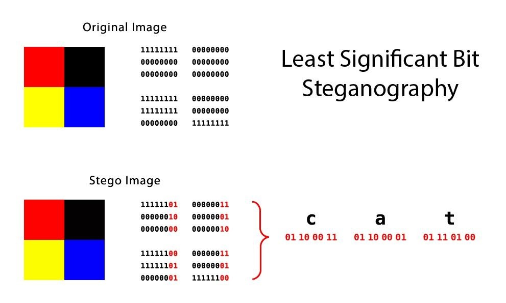

بـسـم الــله الـرحـمـن الـرحـيـم

اليوم معانا ثاني درس من سلسلة دروس علم إخفاء البيانات Steganography
2# مقدمة عن علم إخفاء البيانات Steganography
إعداد وتجهيز : KaSPeR HaCKeR
لماذا تعتبر الصور اكثر شيوعاً وإستخداماً في علم إخفاء البيانات Steganography؟
1- لسهولة الوصول إليها
2- تنوع الاحجام
3 -الالوان
4- مساحة الاخفاء
5- انتشارها بكثرة في المواقع
نقاط مهمة في علم إخفاءالبيانات :
• كلما صغر حجم الملف المخفي كان أكثر صعوبة في كشفه
• عند اختيار الملف الذي سنخفي البيانات او الرسائل السرية يفضل أن :
1- تجنب الصور ذات الألوان المحدودة.
2- تجنب الصور التي تعكس معنى معين مثل الصور التي تحتوي على كلام مكتوب.
3- يفضل إستخدام الصور التي تحتوي على الوان كثيرة ودقتها عالية مثل الصور الملتقطة من قبل الكاميرات.
4- يفضل استخدام الصور ذات امتداد PNG

ما الفرق بين PNG و JPG(JPEG) ولماذا PNG افضل؟
الفرق الجوهري في ضغط الصور
يتم ضغط الصور التي تحمل صيغة JPG ويتم التلاعب في جودتها وهذا يؤدي إلى فقد بعض البتات والذي يؤدي إلى فقدان الملف او النص المخفي داخل الصورة .
اما في الصور التي تحمل صيغة PNG فإنه يتم ضغط الصورة بجودتها الكاملة وما يعيب هذا النوع من الملفات هو كبر حجم الصورة على عكس صور JPG التي غالباً حجمها اصغر.
إذاً صيغة PNG افضل في ال Steganpgraphy بسبب انه لا يتم التلاعب في بتات الصورة.

Cover Image :
هي الصورة التي لا تحتوي على أي ملف مخفي.
Hiding file(OR Message) :
الملف المخفي أو الرسالة المخفية.
Stego Image :
هي الصورة التي تحتوي على الملف المخفي(الصورة الجديدة بعد الإخفاء).
encode :
تشفير
decode :
فك تشفير
أهم التقنيات(الخوارزميات) المستخدمة في علم إخفاء البيانات :
1- البت الأقل أهمية| LSB => Least Significant Bit
2- F5, F4, F3 Algorithms.
ما معنى LSB و MSB وما الفرق بينهما؟
يعتمد نظام العد الثنائي Binary System على الرقمين 0 و 1 .
ويسمى كل رقم في نظام العد الثنائي Digit أي بمعنى خانة،
ونطلق على الخانة التي في أقصى اليسار ب Most Significant Bit ويشار إليها اختصاراً MSB وتعني البت الأكثر أهميةِ،
كما نطلق على الخانة التي في اقصى اليمين ب Least Significant Bit ويشار إليها إختصاراً LSB وتعني البت الأقل أهمية.
مثال :
1 0 1 0 0 1 1 0
يمثل الرقم 1 الذي في أقصى اليسار MSB بينما يمثل الرقم 0 الذي في أقصى اليمين LSB.

كيف يتم إستخدام LSB في علم إخفاء البيانات؟
1. يتم اختيار مجموعة عناصر من الCover عددها يساوي عدد عناصر الرسالة السريه
2. يتم استبدال العناصر التي تم اختيارها بعناصر الرسالة السرية (يتم ادخال عنصر الرسالة السرية في البت الاخير لعنصر ال cover)
تختلف الخوارزميات حسب طريقة الاختيار للعناصر في الخطوة 1. المهم ان نعرف ماهي العناصر التي تم اختيارها حتى نستخرج الرسالة السرية من الcover لاحقا.
شرح تطبيقي لأحد البرامج التي تستخدم طريقة LSB :
- راح اشرح تنصيبه على أنظمة لينكس
- يمكنك تطبيق الدرس على أي نظام تريد حتى Termux!
- المتطلبات لتشغيل البرنامج(السكربت) :
1- Python 2.x
2- Git
3- صورة بصيغة png (البرنامج لا يدعم صور JPG)
4- ملف لكي يتم إخفاءه
- طريقة تنصيب البرنامج :
git clone https://github.com/RobinDavid/LSB-Steganography
cd LSB-Steganography
pip install -r requirements.txt
python2 LSBSteg.py
لعمل encode نستخدم :
python2 LSBSteg.py encode -i input -o output -f file
لعمل deocde نستخدم :
python2 LSBSteg.py decode -i input -o output
المصادر :
1- مدخل إلى علم إخفاء البيانات Introduction to Steganography - رواق
2- النظام الثنائي :Binary - الأكاديمية العربية البريطانية
3- إخفاء نص داخل صورة Steganography - منتديات الفريق العربي للبرمجة